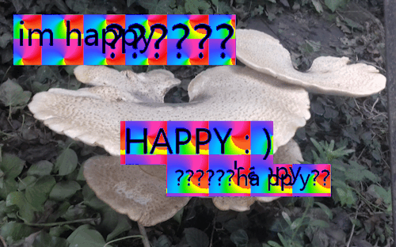
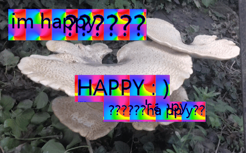

The images detached from every aspect of life merge into a common stream in which the unity of that life can no longer be recovered. Fragmented views of reality regroup themselves into a new unity as a separate pseudoworld that can only be looked at. The specialization of images of the world evolves into a world of autonomized images where even the deceivers are deceived. The spectacle is a concrete inversion of life, an autonomous movement of the nonliving.
 
